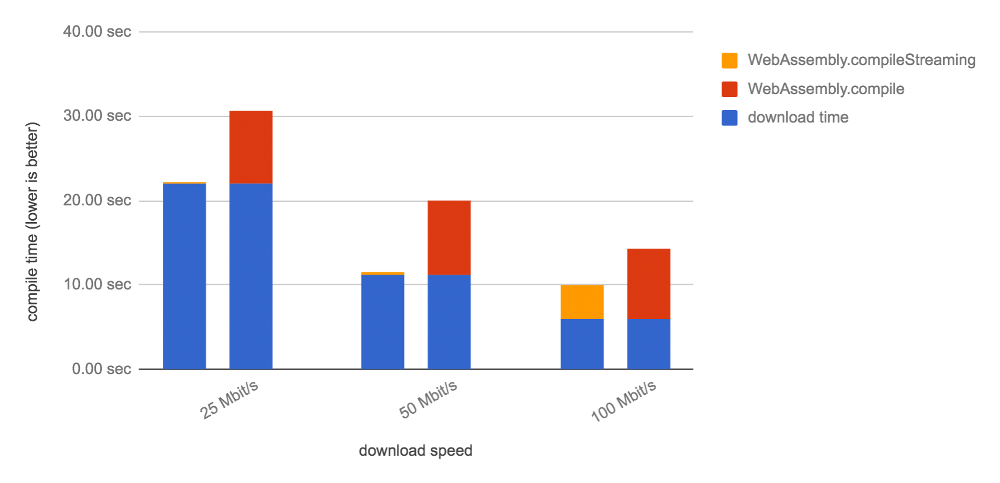

【译文】高效加载 WebAssembly 模块
原文作者：Mathias Bynens
原文地址：https://developers.google.com/web/updates/2018/04/loading-wasm
在使用 WebAssembly 的时候，通常需要下载、编译、实例化一个模块，然后通过 JavaScript 调用由该模块导出的一些东西。这篇文章从一个常见但不是很优秀的代码片段开始，讨论几种可能的优化方法，最后得出最简单、最高效的通过 JavaScript 运行 WebAssembly 的方法。
注意：诸如 Emscripten 的一些工具可以为你准备样板代码，因此你不需要自己编写 wasm 代码。如果你要更加细粒度地控制 WebAssembly 模块加载，那么请专注于下面的最佳实践吧。
下面的代码片段完成了下载-编译-实例化的整个过程，尽管不是很优秀的方式：
1 | // 别这么做 |
注意我们是如何使用 new WebAssembly.Module(buffer) 将响应数据转换成一个模块的。这是一个同步 API，意味着它在完成之前会阻塞主线程。为了防止滥用，Chrome 禁止在超过 4KB 的 buffer 上使用 WebAssembly.Module。为了避免大小限制，我们可以用 await WebAssembly.compile(buffer) 来代替：
1 | (async () => { |
await WebAssembly.compile(buffer) 仍然不是一个优秀的方式，不过姑且先这样。
在修改后的代码片段中，几乎所有的操作都是异步的，因为 await 使之变得很清晰。只有 new WebAssembly.Instance(module) 是个例外。为了一致性，我们可以用异步 WebAssembly.instantiate(module)。
1 | (async () => { |
让我们回顾一下我之前提到的对于 compile 的优化。利用 流式编译，浏览器可以在模块数据下载过程中就开始编译 WebAssembly 模块。因为下载和编译过程是并发的，特别是对于大模块，这样将会更快。

使用 WebAssembly.compileStreaming 替换 WebAssembly.compile 可以开启这个功能。这么做之后还可以避免产生中间数据，因为现在我们可以直接传递由 await fetch(url) 返回的 Response 实例。
1 | (async () => { |
注意：服务端必须经过配置能够支持以 Content-Type: application/wasm 头发送 .wasm 文件。在之前的例子中，我们将响应数据当做 arraybuffer 传递，因此不需要进行 MIME 类型检查。
WebAssembly.compileStreaming API 也能接收一个 resolve 为 Response 的 promise 实例。如果你没在别的地方使用 response，你可以直接传递由 fetch 返回的 promise 对象，而不需要 await：
1 | (async () => { |
如果你也没在其他地方使用 fetch 的结果，你甚至也可以直接传递它：
1 | (async () => { |
我个人认为将其单独成行可读性更好。
想知道我们是如何将响应数据编译为模块然后实例化的？事实证明，WebAssembly.instantiate 可以一步到位。
1 | (async () => { |
如果你只需要 instance 对象，那没理由再保留 module 对象，简化代码如下：
1 | // 这是加载 WebAssembly 的建议方式。 |
总结一下我们所用过的优化方法：
- 使用异步 API 来避免阻塞主线程
- 使用流式 API 来加快 WebAssembly 模块的编译和实例化速度
- 不要写你不需要的代码
尽情享用 WebAssembly 吧！